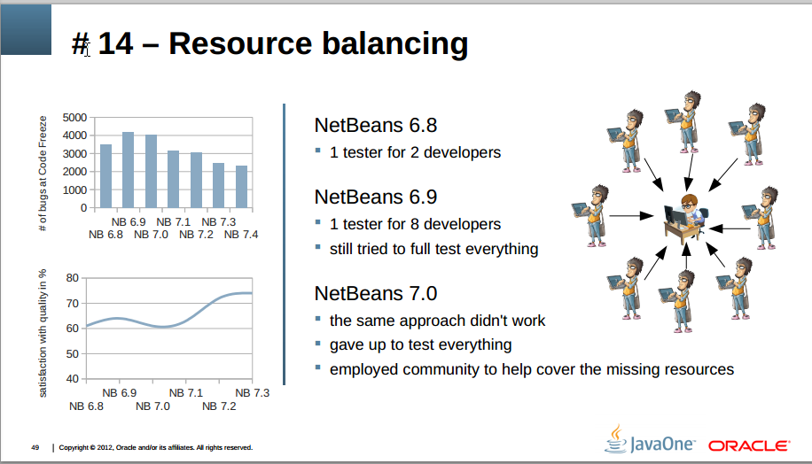
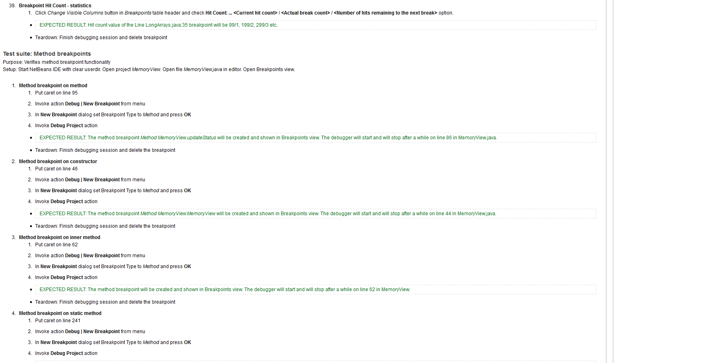
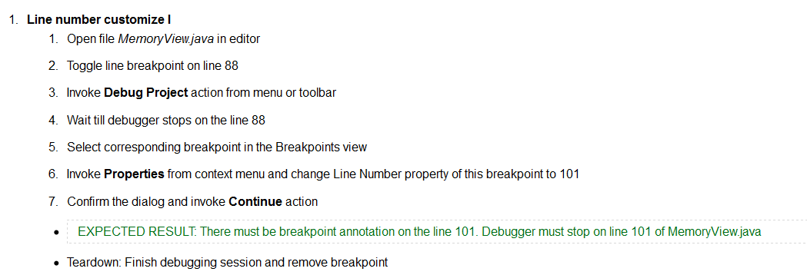
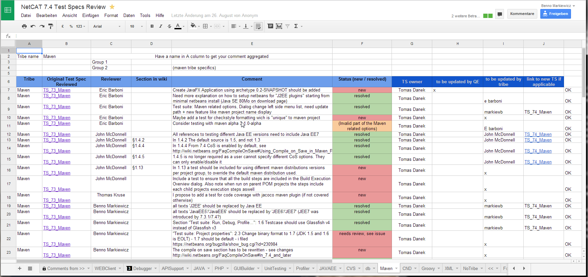
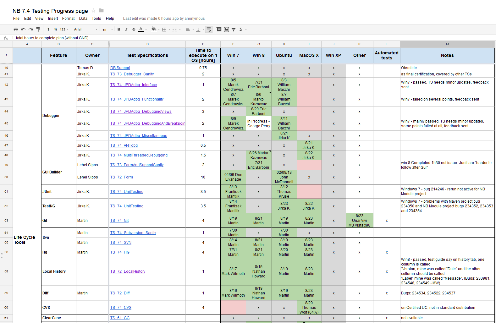

NetBeans NetCat and QC
Insides to community-based testing
Benno Markiewicz
Who am I?
|
Table of content
- NetBeans? NetCAT?
- Collaboration, Bugtracker and Dashboard
- Test specs
- Pre-Integration testing & UI tests
- Bonus
- 15 lessons learned
- Estimation
- Break the rules
What is NetBeans?
- Rich Client Platform based on Swing -> Showcase
- IDE for JavaSE, JaveEE, PHP, C++, Groovy...
- 15th anniversary in 2013
- https://netbeans.org/
What is NetCat?
-
NetBeans Community Acceptance Testing
- Why? 
NetCAT-tribes
- One leader per tribe - real world project users
- Review and execution of TS
- Review of tutorials - NetBeansTutorialsForCommunityReview
- Bugs and exceptions reports get more attention
- Gamification (points, shirts, recommendations...)
- NetCat Community Leader Jiri Kovalsky
Jiri Kovalsky - Community Leader
Collaboration
Issue tracking
- Bugzilla @ https://netbeans.org/bugzilla/
- Used by community and devs
- Issue-lifecycle (pretty standard)
- Priority P1..P4 guideline old|new
- Duplicates raise the priority
- Exceptions reporter with similarity detection and statistics http://statistics.netbeans.org/analytics/
- How to handle >7000 bugs/RFEs?
{kind=link}
Bug-Dashboard
- Dashboard (all | by NetCats | by user)
Test spec
 ExampleSingle test
Test spec review
Progress page
Mercurial & Pre integration testing & CI
- Mercurial - http://hg.netbeans.org/
- Parallel Repo Integration - Pre integration testing
-
Why?
- "Codebase not compilable for 8 weeks." Missed 2500 bugs - #12
- How?
- project repos:
jet-main/web-main/... main-silver(integrates project repos, failure rejects update)main-golden(pulled from stable silver + artifacts)- http://wiki.netbeans.org/HgParallelProjectIntegration
- http://wiki.netbeans.org/WorkingWithNetBeansSources
- project repos:
-
Why?
- Hudson @ http://deadlock.netbeans.org/
Automatic functional testing
- UI-tests based on Jelly/Jemmy
- Tests must pass before integration in more stable repo
BONUS
Additional resources
15 Lessons Learned from 15 Years of Quality Control (!)- #4: Release only if you get bugincome under control p18
- #9: Quality of TS
- #10: Code Coverage - Use wisely or not at all p36
- #12: Pre-integration testing
- #14: What to test? p48
- #16: Quality before Feature Freeze p56
Estimation and Release-Roadmap
Break the rules - Intellij IDEA
- Data-driven tests
- No feature specs
- No test specs
- "Full-time dogfooding"
- "HEAD is a usable IDE every single day"
- Crowd based testing - EAP program
- Gamification - win licenses
- Info based on http://de.slideshare.net/intelliyole/from-renamertopolyglotide